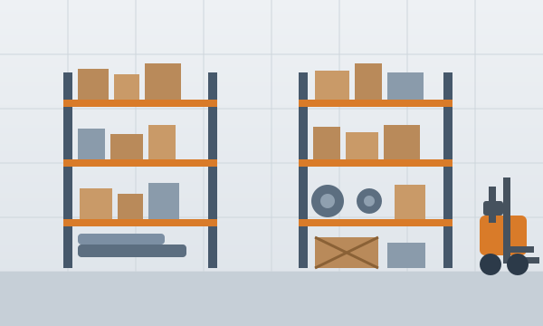
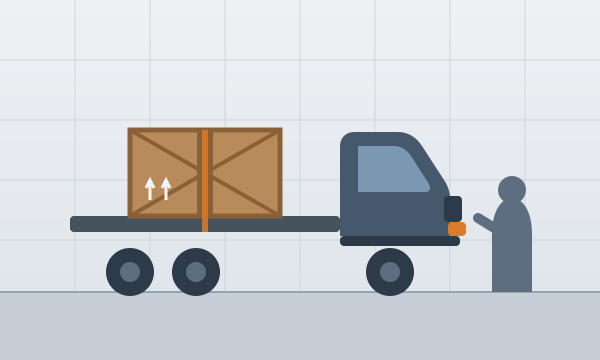
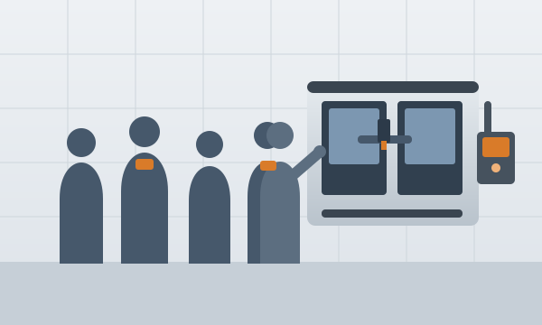

Поступления оборудования, сервисные акции и отчёты о работе участка.

Пятая ось в исполнении с наклонно-поворотным столом Ø650 мм, стойка Siemens 828D, шпиндель 15 000 об/мин. Станок уже подключён и работает - можно посмотреть обработку вживую по записи. Из демо-зала переехал в отгрузку ФВ-850: забрал заказчик из Казани.
До 30 ноября регламентное ТО-500 для станков с ЧПУ - по цене прошлого года: замена СОЖ и фильтров, проверка геометрии и люфтов, смазка узлов. Акция для станков нашей поставки и машин на постгарантийном обслуживании. Запись через сервисную линию +7 (495) 140-26-40.

Пришла очередная партия расходников и запчастей: шпиндельные подшипники NSK/FAG, шарико-винтовые пары, энкодеры Fanuc и Siemens, ремни, фильтры СОЖ, датчики инструмента. Большинство позиций под большинство ходовых станков - в наличии, отгрузка в день оплаты.
Расширили программу трейд-ин: принимаем станки с ЧПУ и универсальное оборудование любого года выпуска и любого производителя. Оценка - после выездной диагностики нашего инженера, зачёт стоимости - в счёт нового станка или услуг. Условия на странице «Доставка и оплата».

Обрабатывающий центр ФВ-850 (3 оси, жёсткая станина Meehanite) уехал заказчику в Екатеринбург выделенной машиной. Пусконаладку выполнил наш инженер на месте: выверка геометрии, пробная обработка по чертежам заказчика, обучение двух операторов. Станок уже в серийной работе.

Провели открытый демо-день для клиентов и технологов: показали обработку турбинной лопатки на пятиосевом центре, рассказали про постпроцессоры и контроль на КИМ. Пришло 19 гостей из 11 компаний. Фотоотчёт и видео - в нашем telegram-канале @stankoprec_news. Следующий демо-день планируем на весну.